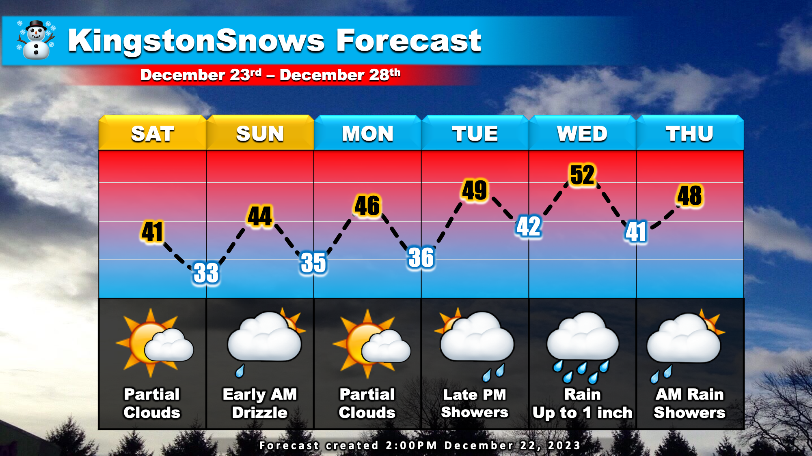

Happy First Day of Winter!
School Forecast
through Monday January 1st
Last updated: 2:30PM Friday December 22, 2023
| 0% (Nope) |
|---|
| 100% (YES!) |
|---|
| 0% (Nope) |
|---|
___________________
2:30PM Update
Welcome to the first full day of winter! Although the season may have changed, our mild and active weather pattern of the past several weeks is poised to continue. Both the past two weekends brought us very wet storm systems, and this week will be no different.
This weekend will feature a dry mix of sun and clouds on Saturday. Early Sunday morning a weak weather disturbance will move through the state which could set off some early morning drizzle and light rain showers from the Hudson valley north and westward. Dry conditions Sunday afternoon will persist through Christmas morning and throughout much of the day Tuesday. Over this time, our temperatures will gradually moderate from the current 30's being reported by local NYS Mesonet stations to the upper 40s by Tuesday afternoon.
Currently, two seperate weather systems are moving into the West Coast. These two storms will merge over the central US this weekend, triggering our next potent storm system. This next storm will impact us late Tuesday evening through Thursday morning with another round of rain. Rainfall is likely to be haviest and steadiest Wednesday morning. The mid-Hudson Valley is likely to experience up to an inch of rain. There is currently about a 40% chance of exceeding one inch of rain and a 10% chance of exceeding 1.5 inches.
The current forecast of roughly one inch of rain during next week's storm is far less than the 4.17 inches that fell in Kingston this past weekend. Despite this, there is a moderate risk of localized flooding next Wednesday and Thursday. So far this month, most of the mid-Hudson Valley has recieved over six inches of rain. This is 2 to 3 times more than we would normally expect to receive. As a result, the ground is currently nearly saturated with much of Ulster and Dutchess Counties over 95% saturated. Because the ground is so saturated, it will be relatively easy for water to begin pooling and flooding to occur, especially in areas with poor drainage. This will be worth keeping an eye on over the next several days.
Happy Holidays to all!
Next Update: On Monday
-Ethan
KingstonSnows | Kingston, New York
Website built by Ethan Burwell